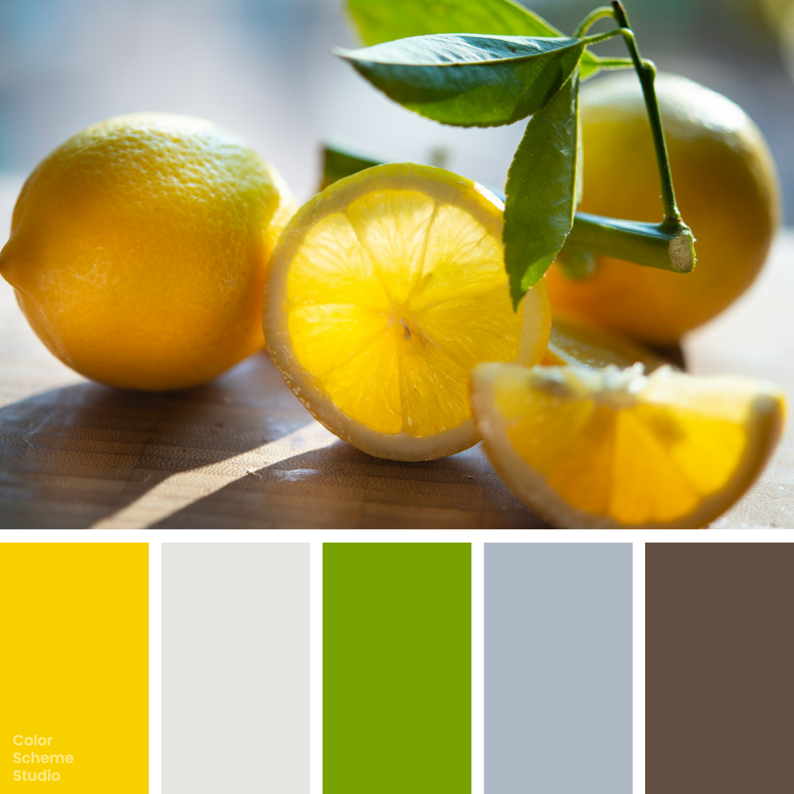

Summer / Vivid
Summer vivid color palette
Bright Gold, Soft Chalk, Fresh Chartreuse, Cool Mist, Warm Umber. Explore five colours and copy their HEX values.

The palette
Click a hex to copyRGB & CMYK values
| Color | Hex | RGB | CMYK (approx.) |
|---|---|---|---|
| Bright Gold | #F8D000 | 248 208 0 | 0 16 100 3 |
| Soft Chalk | #E5E6E1 | 229 230 225 | 0 0 2 10 |
| Fresh Chartreuse | #77A100 | 119 161 0 | 26 0 100 37 |
| Cool Mist | #AFB9C5 | 175 185 197 | 11 6 0 23 |
| Warm Umber | #604E40 | 96 78 64 | 0 19 33 62 |
Golden yellow with a fresh green edge
Bright Gold and Fresh Chartreuse bring the strongest energy to this palette: one warm and yellow, the other sharper and green. Soft Chalk and Cool Mist soften that intensity with pale neutral surfaces, while Warm Umber adds an earthy counterweight. In the previews, the yellow and green shapes stand against chalk, with cool gray around the warmer details and umber anchoring the smaller action.
The palette, in use.
One way these five colours can look together.
A fresh
point of view.
Colour, stories and things
worth keeping.
A little
inspiration.
good idea.A collection worth coming back to.
Illustrative previews. White and dark ink are added for readable text.
Photo by Cristina Anne Costello on Unsplash. Color studies and application notes by Color Scheme Studio.